Galería
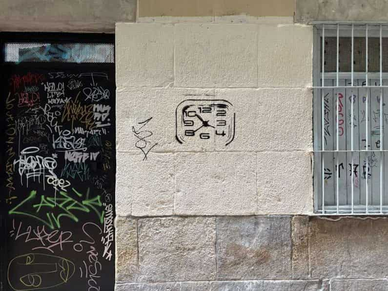


 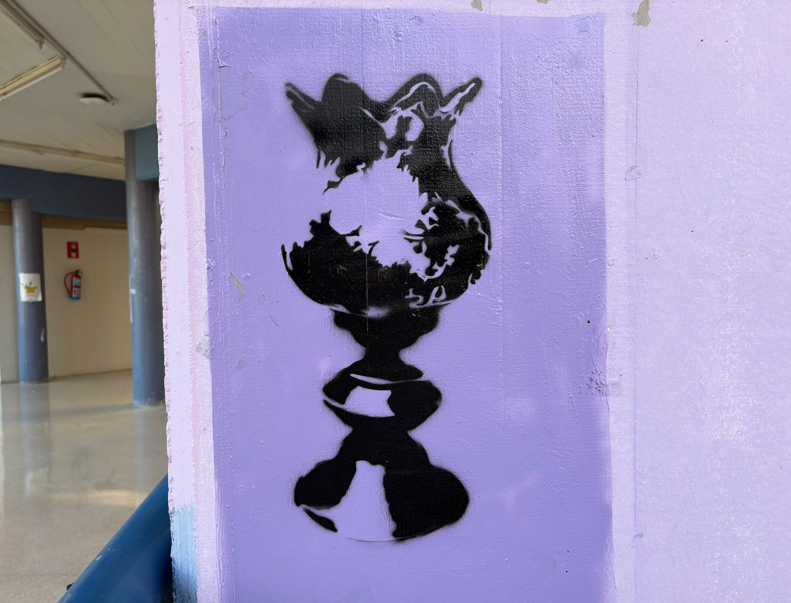
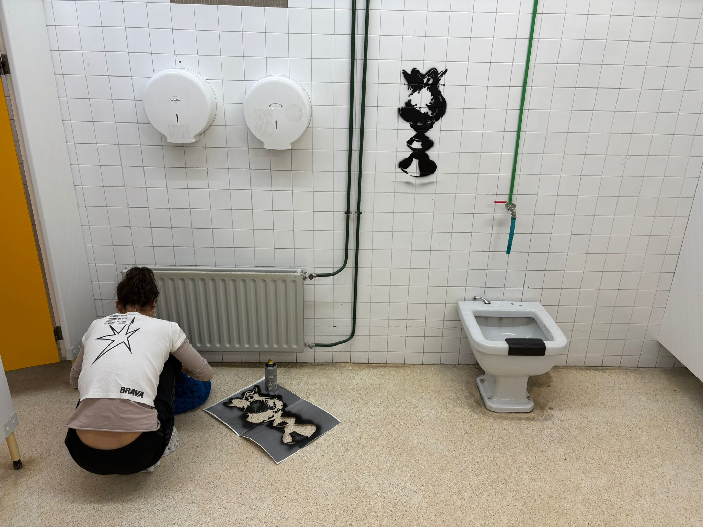
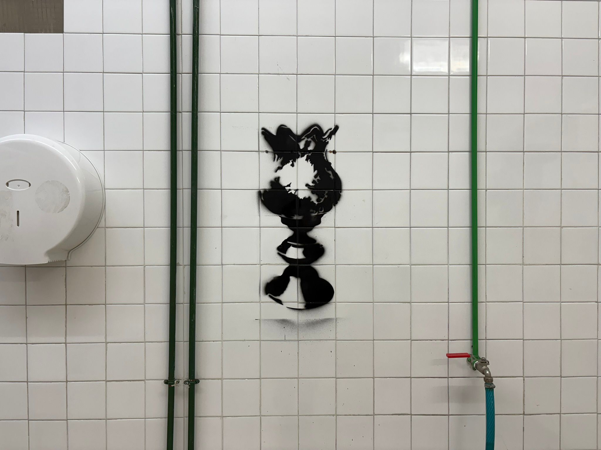
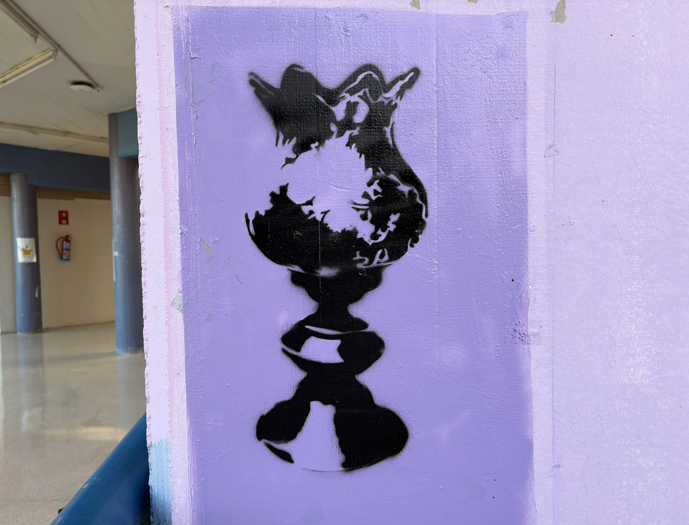
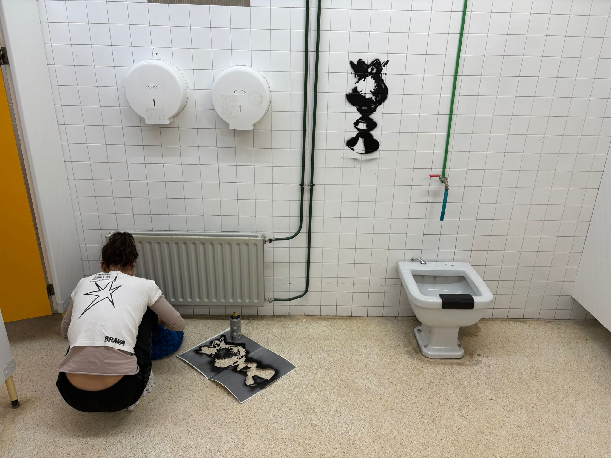
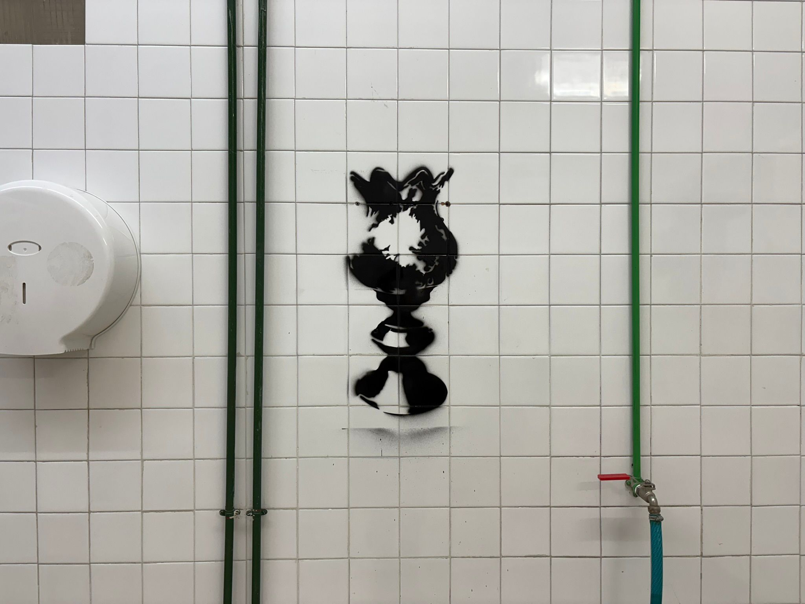
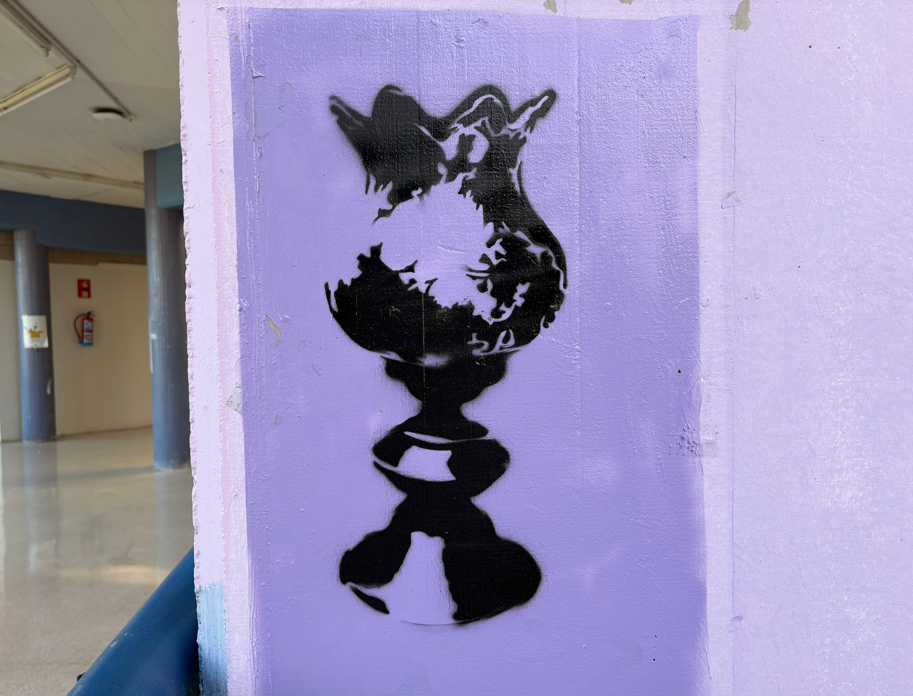
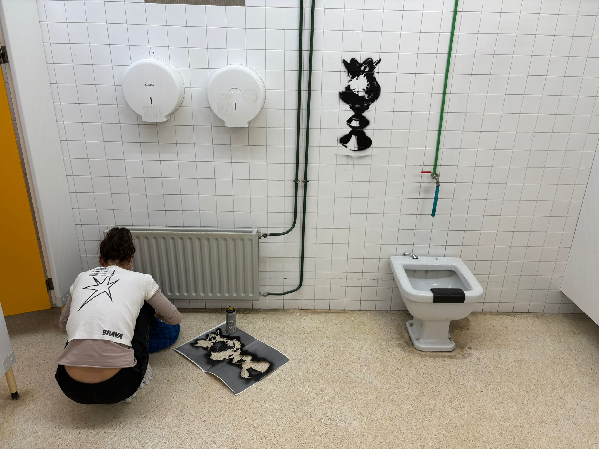
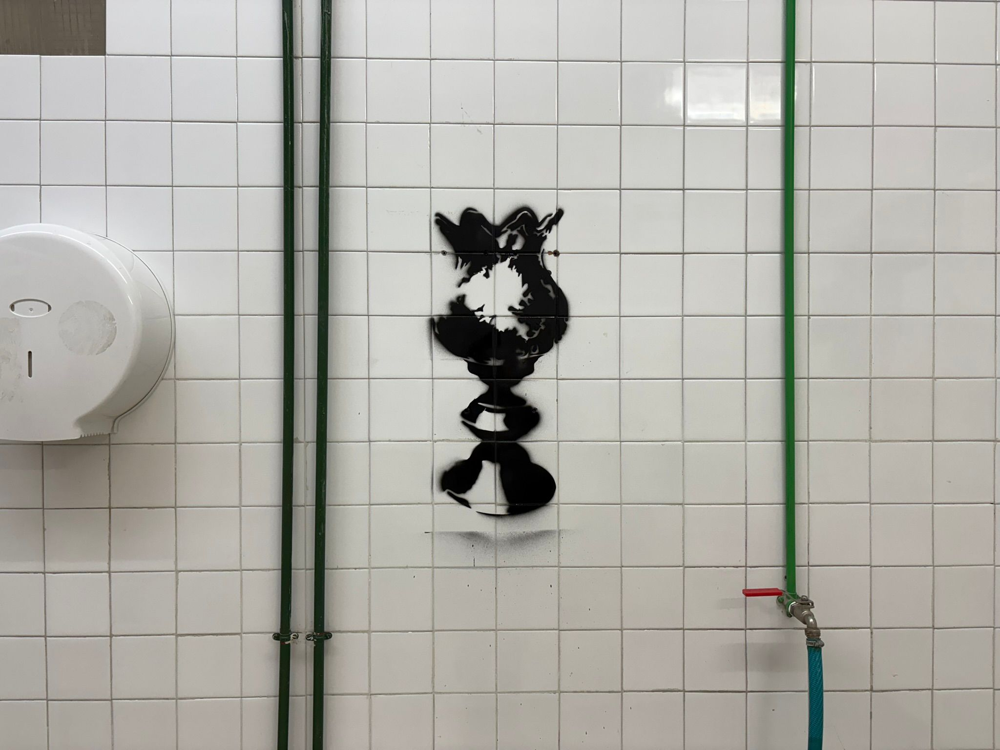
Investigación.
La pérdida de la ornamentación y la huella del paso del tiempo constituyen el eje central de este proyecto, en el que se ha buscado devolver visibilidad y vida a una serie de objetos cotidianos hallados en anticuarios, trasladándolos posteriormente al espacio urbano.
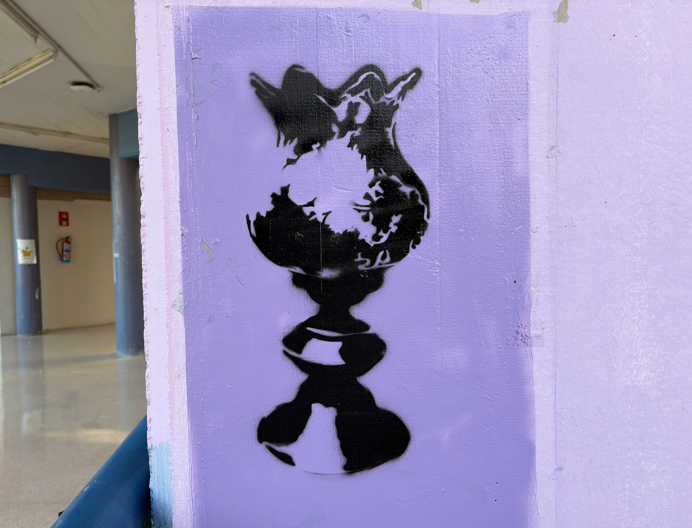
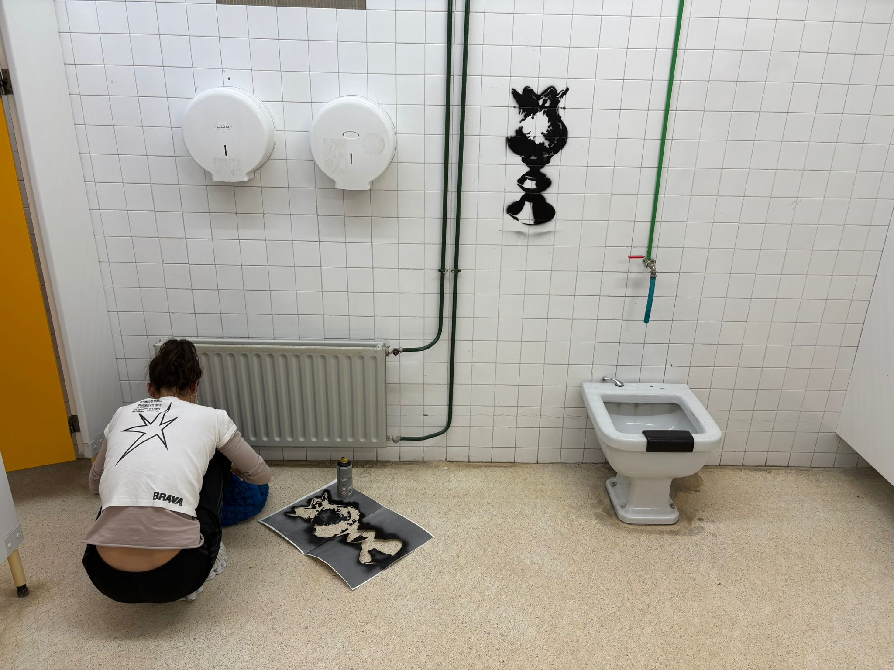
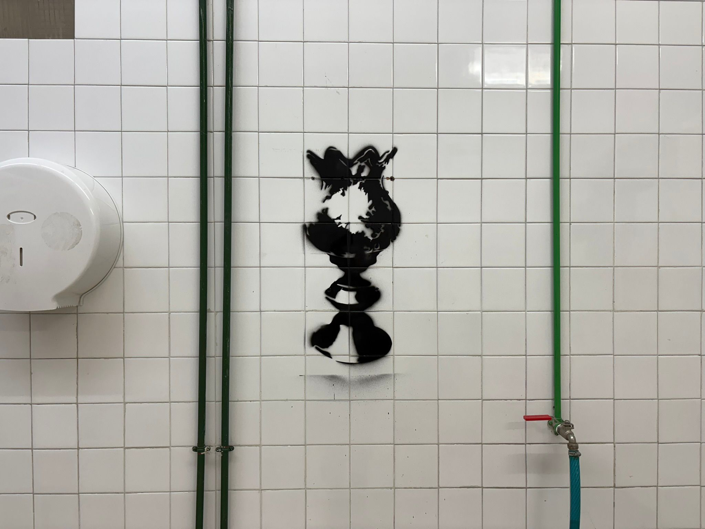
Intervenciones en el espacio urbano mediante diferentes materiales gracias a la técnica del stencil.